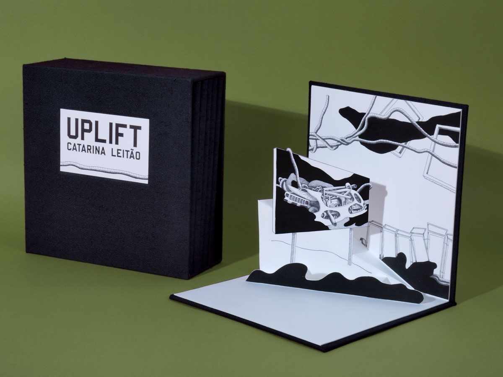
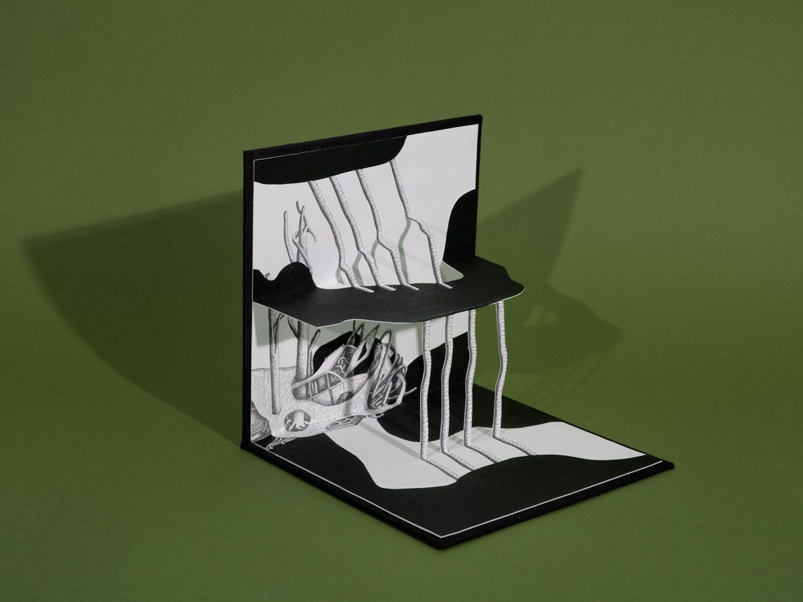
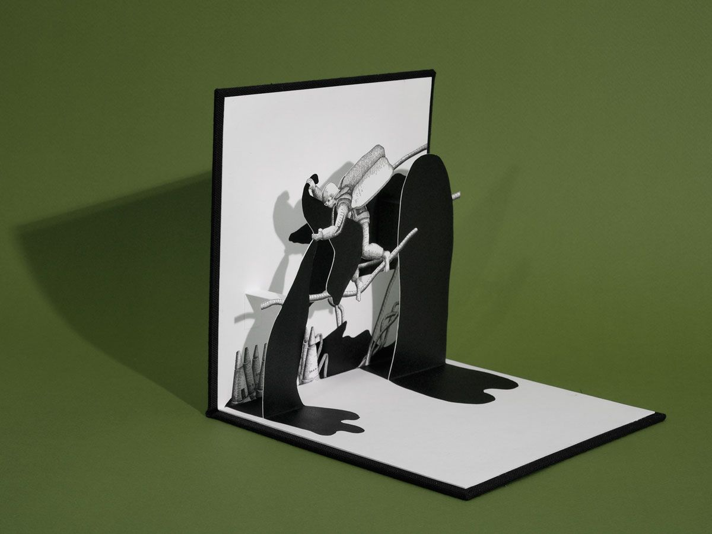
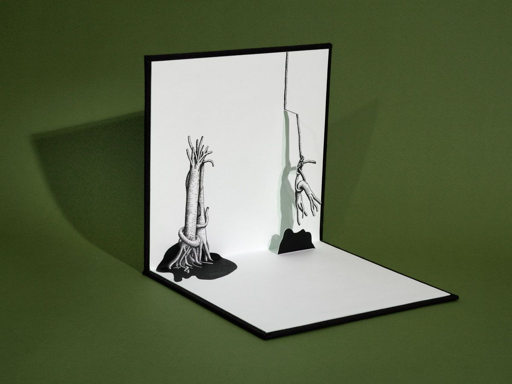
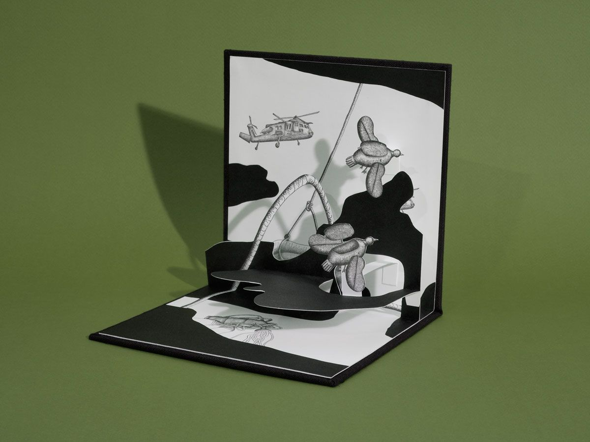
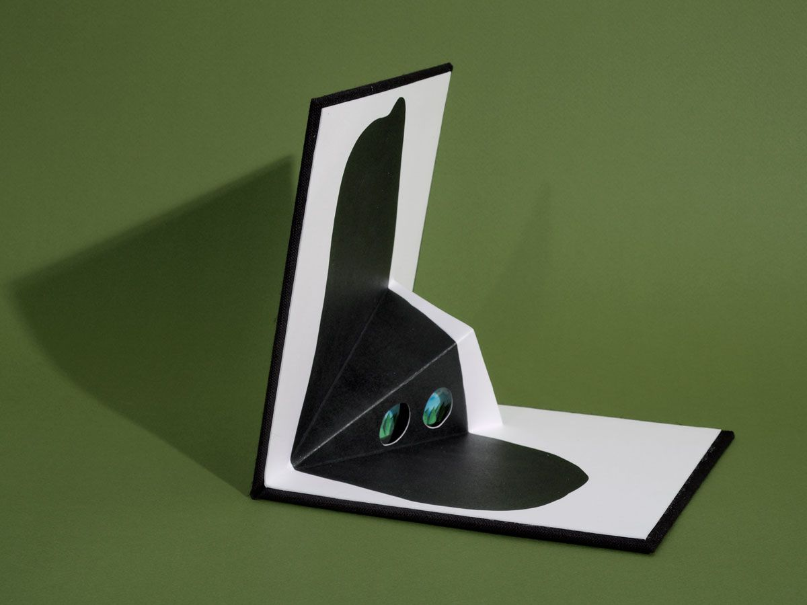
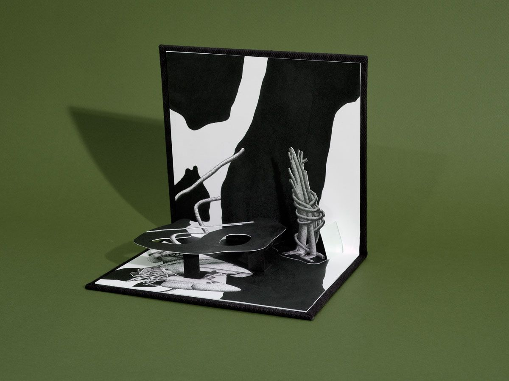

Uplift
Center for Book Arts, New York, 2008
Uplift, created in 2008 at the Center for Book Arts in New York during an artist residency, was pivotal in my research. As a platform to explore the articulation between sculpture and drawing, this pop-up book led to subsequent works such as Invasive Species, 2010–11, a piece which may function as a book or expand into an installation that occupies a whole room. The shift in scale relations that an open or closed piece can generate is significant in terms of how it is perceived, and it adds another layer to the idea of an economy of means, present in my practice.
In Uplift, a narrative was created from a series of black and white drawings. Tracing ambiguous relationships between figure and ground through deep black shapes and white areas, the drawings represent scenes of an interaction between an organic and a constructed world. In the book, I add a three-dimensional component, aiming to expand the spatial scope of drawing, introducing positive and negative volumes, orifices, light and shade.
Pop-up book, letterpress-printed from polymer plates and hand-painted with sumi ink. Edition of 5, signed and numbered. Printed and bound by the artist at the Center for Book Arts, New York.







Texts
- UpliftCatarina Leitão · Center for Book Arts, Nova Iorque · 2013 · EN
Press
- Open Book (PDF)Grant Mandarino · Ann Arbor Observer · 05.2010 · EN
Video
- vimeo.com/688963244Video, 1:20 min, photography by Luísa Ferreira